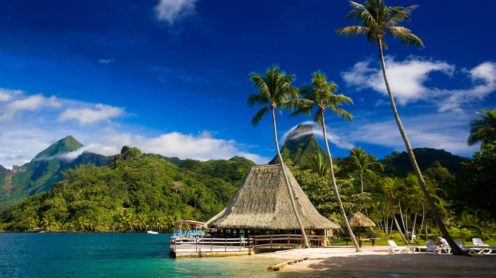
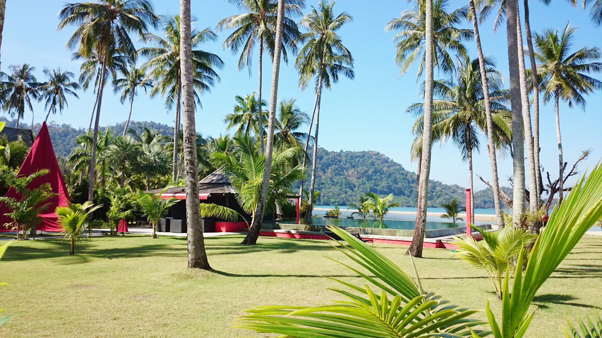
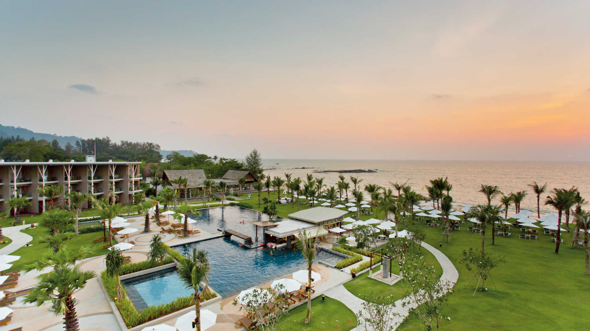

Таиланд

Все о путешествии в Таиланд
О стране
Королевство Таиланд — государство с самой протяженной береговой линией во всей Азии, растянувшееся более чем на 1800 километров с севера на юг; омывается водами Андаманского моря и Сиамского залива.
Таиланд — одно из самых популярных туристических направлений в Юго-Восточной Азии. Эта экзотическая страна покоряет своим гостеприимством, удивительной природой и разнообразием развлечений на любой вкус, от шумных дискотек в Паттайе до медитации в древних буддийских храмах. Береговая линия страны протянулась более чем на 3 000 км. Здесь находится огромное количество курортов с комфортабельными отелями, яркими городскими кварталами, уединенными бунгало на островах и чистейшими пляжами, защищенными коралловыми рифами.
Свой отдых в Таиланде рекомендуем начать со знакомства с Бангкоком, являющегося столицей этого государства. Здесь Вы увидите множество уникальных и прославленных на весь мир достопримечательностей, ключевыми из которых являются Королевский Дворец и статуя лежащего будды. Продолжая тур по Таиланду, можно отправиться в древнюю столицу Сиама, расположенную в 86 км севернее Бангкока, где находится знаменитый парк Аюттхая с развалинами старинных храмов и руинами дворца Банг-Па-Ин.
Если поехать на запад от Бангкока, то недалеко от городка Накхонпатха можно увидеть самую большую в мире статую будды – 127-метровую Пра-Патхом-Чеди. Рядом с городком Канчанабури имеются такие печально известные достопримечательности, как «Дорога смерти» и мост через реку Квай, которые во время Второй мировой войны были построены военнопленными. Неподалеку расположены слоновий заповедник Сампхран, зоопарк и этнографический центр «Сад Роз». Северный Таиланд интересен тем, что здесь зародилась тайская цивилизация, на его территории находятся роскошные тропические леса и водопады, а также древние города и храмы.
Здесь проходят яркие национальные праздники, в которых Вы можете принять участие в качестве почетных гостей. И тогда поездка в Таиланд надолго останется в Вашей памяти яркими воспоминаниями, а фотоальбом пополнится уникальными снимками. Путевки в Таиланд дадут Вам возможность посетить уникальные заповедники дикой природы, поединки легендарного тайского бокса, увлекательные шоу с тиграми, слонами и крокодилами, а также древние храмы и пагоды. Почти все курорты Таиланда предлагают туристам захватывающий дайвинг, азартную рыбалку и зажигательные танцы, в которых с удовольствием участвуют туристы со всего мира.
Бангкок

Экономический и культурный центр Таиланда расположился на восточном берегу реки Чаупхрая, недалеко от Сиамского залива. Поездку сюда лучше всего планировать на период с ноября по февраль, когда погодные условия наиболее комфортны: средняя дневная температура — около 25 °C, а дожди редки и непродолжительны.
Бангкок — это город контрастов, в котором зеркальные небоскребы соседствуют с одноэтажными постройками старых кварталов, а запредельное количество буддийских храмов сменяется бесконечный чередой ночных клубов. Наиболее интересные достопримечательности столицы, такие как Королевский дворец, Национальный музей, Золотая Гора, Храм Изумрудного Будды и другие буддийские святыни, находятся в исторических районах — в Банглампу и на острове Раттанакосин.
Паттайя

Популярнейший тайский город на побережье Сиамского залива давно прославился во всем мире как самый оживленный, отвязный и неутомимый курорт Азии. А наличие собственного аэропорта и приближенность к Бангкоку делает Паттайю наиболее доступной для туристов. Здесь отлично развита инфраструктура: много отелей с превосходным сервисом, длинные благоустроенные пляжи и масса возможностей для интересного отдыха с развлечениями на любой вкус.
Несмотря на общепризнанный молодежный курорт, Паттайя не менее привлекательна и для семейного отдыха с детьми. Маленьких туристов здесь ждут различные аттракционы, аквапарки и зоопарки, также на территории города есть океанариум и дельфинарий.
Пхукет

Пхукет — знаменитый курорт Таиланда, расположенный на живописных островах Андаманского моря. Найти здесь себе место для идеального отдыха может каждый. Любители тусовок и активной ночной жизни выбирают город Патонг. Ценителям спокойного отдыха и семьям с детьми лучше остановиться в тихом отеле у пляжа Ката. Желающим культурно просветиться стоит побывать в Национальном музее и познакомиться с многочисленными буддийскими святынями Пхукета.
Природа курорта стоит отдельного упоминания. Это и заповедный тропический лес с диковинными птицами, и уникальные мангровые рощи, и черепаший пляж Май Као, и сказочный остров Симилан, коралловые рифы которого — мечта любого дайвера.
Самуи

Остров Самуи — настоящая жемчужина Таиланда в бирюзовых водах Сиамского залива. Песчаные белые пляжи, тропические пейзажи, уникальные достопримечательности и уютные отельные комплексы создают идеальные условия для безмятежного и расслабляющего отдыха.
В Самуи туристов ждёт много экскурсионных и развлекательных программ: поездки к буддийским святыням, знакомство с флорой и фауной острова в Океанариуме, Тигровом зоопарке, Парке бабочек, на змеиной или крокодиловой фермах. Курорт предлагает массу возможностей и любителям водных видов спорта — дайвинга, сёрфинга, водных лыж. А молодожёнам лучше места для проведения свадебной церемонии просто не найти!
Ко Чанг

Ко Чанг — райский остров на восточном побережье Сиамского залива, по форме напоминающий слона. Курорт славится своими белоснежными пляжами, заповедной природой с тропическими лесами и изумительными водопадами.
На острове ещё остались уединенные уголки, куда не добралась цивилизация. Тем не менее, он активно осваивается: отели на любой вкус и кошелек здесь растут как грибы после дождя, от роскошных вилл с бассейнами и ресторанами до уютных хижинок с минимальными удобствами.
Краби

Провинция Краби — дивный уголок Таиланда, который включает в себя материковую часть, 10 крупных и множество мелких островов. Несмотря на активное развитие туристической инфраструктуры, природа здесь сохранила свою первозданную красоту. Это мир известняковых скал, окаймленных белоснежными пляжами, поросших лесом гор, мангровых рощ, пещер, горячих источников и коралловых рифов.
Краби — это настоящий рай для любителей водных видов спорта и экотуризма. Ежегодно сюда приезжают тысячи сёрферов и дайверов, для которых в крупных отелях работают спортивные центры. Отдельного внимания заслуживает каякинг в скрытых лагунах и водных пещерах, а также прогулки на быстроходных катерах к карстовым островам.
Хуахин
Приморский город Хуахин расположен в 220 км к югу от Бангкока. По традиции его называют королевским курортом. Именно сюда на протяжении 100 лет приезжают отдыхать представители монаршей династии Чакри. Королевская резиденция окружена высокими зданиями отелей и кондоминиумов, а историческая часть города с ее храмами и плавучими рынками охраняется как культурное наследие страны. Многочисленные бары и прибрежные ресторанчики оживают ближе к вечеру, когда спадает жара. Ассортимент морепродуктов и традиционных тайских блюд впечатлит даже искушенного гурмана.
Городской пляж представляет собой широкую косу протяженностью около 6 км. Он славится белым песком и чистыми водами. Море здесь не глубокое, что идеально подходит для отдыха с детьми. Повсюду расставлены шезлонги и зонтики, тайские женщины предлагают массаж. Отдых в Хуахин – это ленивый отдых в атмосфере гармонии.
Као-Лак

Прекрасный курорт на берегу Андаманского моря для путешественников, ищущих тишину и спокойствие. Здесь нет бурной ночной жизни и громких дискотек, поэтому отдых в Као Лаке чаще всего выбирают семьи с детьми и туристы старшего возраста.
На территории курорта есть все условия для полного релакса, восстановления душевных и физических сил: йога-клубы, ухоженные пляжи, оздоровительные и СПА-центры. Картину сказочного отдыха дополняют великолепные природные парки с водопадами, озерами, экзотическим растительным и животным миром. В непосредственной близости от Као Лака находится множество заповедников, что делает курорт привлекательным и для поклонников экотуризма.
Талинг Нгам

А вот поселок Талинг Нгам подойдет тем, кто ищет тишины, спокойствия и уединения. Но, и там, и там, Вас ждет изысканная, разнообразная и экзотическая кухня. Все блюда в ресторанах готовят из свежайших морепродуктов, при этом цены на них очень доступные. Местными туристическими достопримечательностями являются водопады Хин Лад и Намуанг, ферма жемчуга Нага, сад бабочек. Интересно будет посетить также шоу обезьян и слонов. Рекомендуем Вам взять напрокат велосипед или джип, чтобы проехать вглубь острова и насладиться его нетронутыми восхитительными пейзажами. А на южной оконечности пляжа Ламай Вы можете увидеть два камня причудливой формы – это тоже своего рода местная достопримечательность. Их называют "бабушка" и "дедушка". Согласно легенде, супружеская пара плыла мимо острова в лодке, но разыгрался сильный шторм, лодка разбилась, а тела выбросило на берег, где впоследствии и появились эти уникальные каменные образования. Недалеко от камней находятся торговые ряды, где Вы можете приобрести сувенирную продукцию или одежду.
По всем вопросам свяжитесь с нами любым удобным способом:
E-mail: trohin.zh@yandex.ru
Телефон: +7 (963) 649-18-52
Соцсети: Вконтакте | Instagram | Telegram
Индивидуальный предприниматель Трохин Евгений Альбертович
ИНН 503613656680 / ОГРН ИП 315507400016056
Заполните анкету
Мы подберем идеальный тур, исходя из ваших желаний и эмоционального настроя.